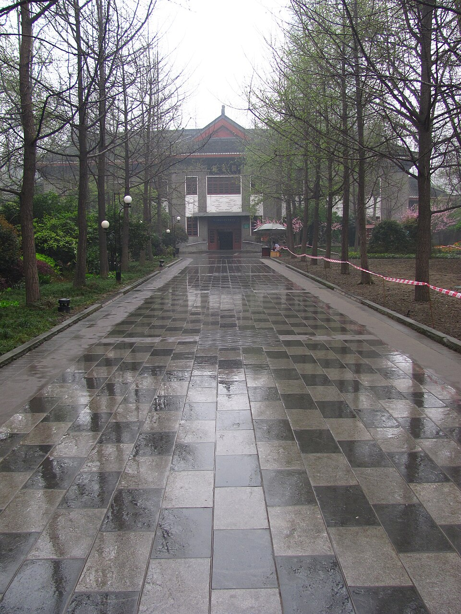

People’s Park
A classic Chengdu park for slow wandering and people-watching.
Photo: Jeremy Thompson · CC BY 2.0 · sourceA slower cultural day centered on teahouse life, historic lanes, and a face-changing performance.


A visual preview of each stop.
A classic Chengdu park for slow wandering and people-watching.
Photo: Jeremy Thompson · CC BY 2.0 · sourceSit for tea and experience Chengdu’s famously unhurried pace.
Photo: Jeremy Thompson · CC BY 2.0 · sourceHistoric-style lanes filled with snacks, courtyards, and browsing.
Photo: xiquinhosilva · CC BY 2.0 · source